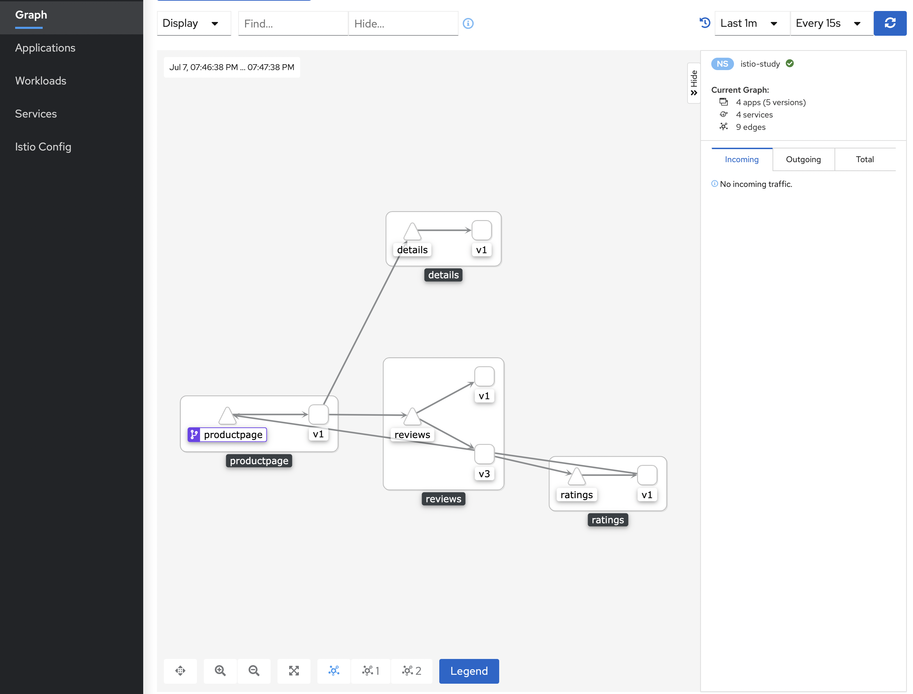

Istio 环境快速搭建
本文可以帮助你快速搭建和试用Istio。
如果你对 Istio 已经非常熟悉，或者希望部署不同配置的Istio或者一些高级的部署模型 ，可以参考FAQ中我们应该怎么选择Istio的部署方式 。
在搭建 Istio 之前，你首先需要有一个正常运行的 K8s 集群，且 K8s 的版本与 Istio 版本兼容。
| Istio版本 | K8s版本 |
|---|---|
| 1.8 | 1.16, 1.17, 1.18, 1.19 |
| 1.9 | 1.17, 1.18, 1.19, 1.20 |
| 1.10 | 1.18, 1.19, 1.20, 1.21 |
下面，我们将按照如下步骤来开始使用 Istio:
- 下载并安装Istio
- 部署示例应用程序
- 对外开放应用程序
- 查看仪表盘
下载Istio
Step1
转到 Istio 发布页面 ，下载针对你操作系统的安装文件。
或者也可以用自动化工具下载并提取最新版本（Linux 或 macOS）：
curl -L https://istio.io/downloadIstio | ISTIO_VERSION=1.8.3 TARGET_ARCH=x86_64 sh -
Step2
cd ./istio-1.8.3
在该目录下包含如下内容：
- 示例应用文件: samples/ 目录下。
- istioctl 客户端: bin/ 目录下。
- istio 配置相关配置文件: manifests/ 目录下。
Step3
将 istioctl 客户端所在目录添加至 PATH 环境变量中：
export PATH=$PWD/bin:$PATH
安装Istio
接下来，我们使用 demo 的 配置 来进行 istio 的安装。
Ps: demo 的配置其实是一组专为测试/学习准备的功能集合，对于生产环境或性能要求较高的环境，建议选择其他配置。
istioctl install --set profile=demo -y
# ✔ Istio core installed
# ✔ Istiod installed
# ✔ Egress gateways installed
# ✔ Ingress gateways installed
# ✔ Installation complete
当Istio安装完成后，我们还可以指定一些 namespace 可以默认自动注入 Envoy Sidecar 从来实现流量代理。
kubectl label namespace default istio-injection=enabled
# namespace/default labeled
部署示例应用程序
当 Istio 部署完成后，我们就可以开始部署我们的示例应用程序了。
下面，我们以 书店应用程序 为例进行演示。
kubectl apply -f samples/bookinfo/platform/kube/bookinfo.yaml
接下来，我们就要等待 bookinfo 中的每个 Pod 部署完成了，在部署的过程中，Istio 的 Sidecar 也会自动进行部署。
我们可以通过如下命令来查询部署的状态：
kubectl get services
kubectl get pods
# NAME READY STATUS RESTARTS AGE
# details-v1-5974b67c8-cq9vs 2/2 Running 0 3h28m
# productpage-v1-64794f5db4-b9rdd 2/2 Running 0 3h28m
# ratings-v1-c6cdf8d98-8wpfx 2/2 Running 0 3h28m
# reviews-v1-7f6558b974-88z5n 2/2 Running 0 3h28m
# reviews-v2-6cb6ccd848-jk65m 2/2 Running 0 3h28m
# reviews-v3-cc56b578-wm5xl 2/2 Running 0 3h28m
Ps: 再执行后续操作之前，需要先保证你的所有Pod都已经可以正常运行起来了。
下面，我们也可以通过运行如下命令来进行检查服务是否已经正常运行了：
kubectl exec "$(kubectl get pod -l app=ratings -o jsonpath='{.items[0].metadata.name}')" -c ratings -- curl -s productpage:9080/productpage | grep -o "<title>.*</title>"
# <title>Simple Bookstore App</title>
对外开放应用程序
此时，bookinfo 应用其实在 K8s 集群中正常部署好了，但是它还不能被外部的服务进行访问。
为了让它可以被正常访问，我们需要创建一个 Istio 入口网关 ，它会在服务网格边缘把一个路径映射到我们的服务上。
kubectl apply -f samples/bookinfo/networking/bookinfo-gateway.yaml
# gateway.networking.istio.io/bookinfo-gateway created
# virtualservice.networking.istio.io/bookinfo created
接下来，我们可以使用 istioctl 工具来验证一下我们的配置是否正常:
istioctl analyze
下面，我们来查一下我们入口网关的IP和端口。
首先，查询一下入口网关的HOST_IP：
export INGRESS_HOST=$(kubectl get po -l istio=ingressgateway -n istio-system -o jsonpath='{.items[0].status.hostIP}')
echo $INGRESS_HOST
它其实就是 ingressgateway Pod 所在的机器IP。
下面，我们再来查询一下入口网关的端口：
export INGRESS_PORT=$(kubectl -n istio-system get service istio-ingressgateway -o jsonpath='{.spec.ports[?(@.name=="http2")].nodePort}')
echo $INGRESS_PORT
export SECURE_INGRESS_PORT=$(kubectl -n istio-system get service istio-ingressgateway -o jsonpath='{.spec.ports[?(@.name=="https")].nodePort}')
echo $SECURE_INGRESS_PORT
查询到了入口网关的IP和端口，那么，接下来，我们就可以组装得到入口网关的地址了：
export GATEWAY_URL=$INGRESS_HOST:$INGRESS_PORT
echo "$GATEWAY_URL"
为了验证该服务是否可以被外部服务正常访问，我们可以组装得到希望访问的URL，然后使用你的 WEB 浏览器打开看看吧：
echo "http://$GATEWAY_URL/productpage"
查看仪表盘
Istio 内置集成了一系列遥测相关的应用。 这些遥测服务可以帮助我们理解服务网格的结构、展示网络的拓扑结构、分析网格的健康状态等。
下面，我们来部署一下 kiali 仪表盘。
kubectl apply -f samples/addons
kubectl rollout status deployment/kiali -n istio-system
# Waiting for deployment "kiali" rollout to finish: 0 of 1 updated replicas are available...
# deployment "kiali" successfully rolled out
Ps: kubectl apply 指令在第一次执行时，如果有一些 no matches for kind 类相关的报错的话，只需要再次重复执行一下即可，它们有时候和一些先后顺序有关。
完成 kiali 的部署后，我们可以给 kiali 提供一个访问入口：
istioctl dashboard kiali
# http://localhost:20001/kiali
上述命令可以申请一个端口，可以用于直接访问 kiali Dashboard页面。
进入 kiali Dashboard 页面后，在左侧的导航菜单，选择 Graph ，然后在 Namespace 下拉列表中，选择 default 。
Kiali 仪表板展示了网格的概览、以及 Bookinfo 示例应用的各个服务之间的关系。 它还提供过滤器来可视化流量的流动。

接下来
到此为止，我们其实就已经完成了 Istio 的环境搭建和体验。
对于新手来说，这些任务是非常好的资源，可以借助 demo 安装更深入了解 Istio 的特性：
在你在生产环境使用 Istio 之前，请务必先阅读如下资源：
移除 Istio
删除 Bookinfo 示例应用和配置, 参阅 删除Bookinfo .
Istio 卸载程序按照层次结构逐级的从 istio-system 命令空间中删除 RBAC 权限和所有资源。对于不存在的资源报错，可以安全的忽略掉，毕竟他们已经被分层的删除了。
kubectl delete -f samples/addons
istioctl manifest generate --set profile=demo | kubectl delete --ignore-not-found=true -f -
命名空间 istio-system 默认情况下并不会被删除。 不需要的时候，使用下面命令删掉它：
kubectl delete namespace istio-system
指示 Istio 自动注入 Envoy 边车代理的标签默认也不删除。 不需要的时候，使用下面命令删掉它。
kubectl label namespace default istio-injection-